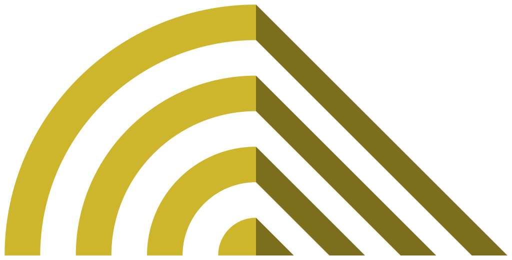
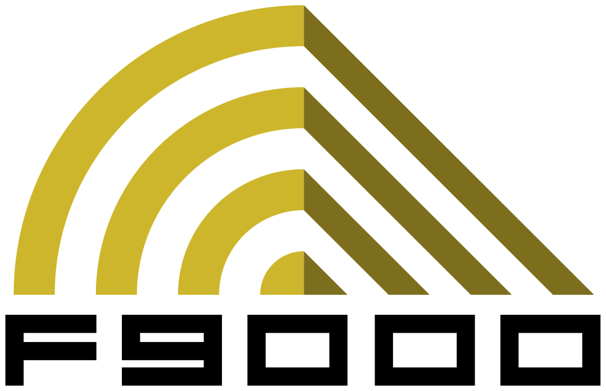

| League | Game | Released▲▼ | In-game year▲▼ | Marks | Fonts | Background | |
|---|---|---|---|---|---|---|---|
 | AGRC | WipEout 2048 | 2012 | 2048–2050 |  | Wipeout HD | The Anti-Gravity Racing Championship — the founding era of the sport. Across the 2048–2050 seasons races were run on public streets (chiefly Nova State City), as no dedicated AG circuits yet existed. Its loose regulation is what drove Pierre Belmondo to call for the standardisation that became the F3600 League. |
 | F3600 | WipEout | 1995 | 2052 |  wordmark.") | SilverStream | The first regulated anti-gravity league, formed after Pierre Belmondo's call to standardise the sport; the rules were set in 2051, a year before the inaugural 2052 season. F3600 weaponry was deliberately too weak to destroy craft — the in-lore reason you cannot be eliminated in the original WipEout. The 2056 season was suspended after AG racing's first fatality, AG Systems' Daniel Chang. |
 | F5000 | WipEout 2097 / XL | 1996 | 2097 |  | F50002097 | A faster, far more dangerous league: for the first time, weapons capable of destroying craft were permitted. The blistering Phantom speed class debuted for the 2097 season, and arms-and-racing outfit Piranha Advancements arrived late in the league with their experimental prototype craft. |
 | F7200 | Wip3out | 1999 | 2116 |  | WO3 | The Wip3out era, whose inaugural 2116 season was held entirely in a single location, Mega City. A Classic League of fan-voted F3600 and F5000 tracks was later added, before the commission upgraded the sport to the combat-heavy F9000. |
 | F9000 | WipEout Fusion | 2002 | 2160 |    | Fusion | The most violent and extravagant era, built around vehicular combat. It is remembered for the Temtesh Bay disaster — a collapsing mine section that killed six pilots — and for its downfall: the 2170 'Fall of the F9000', when corruption between the Federation, sponsor Overtel and crime syndicates was exposed and the league was suspended indefinitely. |
 | FX300 | WipEout Pure | 2005 | 2197 |  | FX300FX300 Angular2197 Heavy | The revival of professional AG racing — roughly 25 years after the Fall of the F9000, and the first pro league in almost three decades. It ran entirely on the man-made Hawaiian island of Makana and introduced two new teams: the humanitarian Harimau and the arms-maker Triakis. |
 | FX350 | WipEout HD / Fury | 2008 | 2206 |  | Wipeout HD FuryNeo Sans | A short bridge league run in 2206 to develop the coming FX400, easing pilots from Makana's traditional circuits toward its new MagLock-technology tracks. Though WipEout HD released a year after Pulse, FX350 sits one year earlier in the fiction. |
 | FX400 | WipEout Pulse | 2007 | 2207 |  | Neo Sans | By 2200 the island of Makana could no longer sustain the sport's traffic, so from 2205 tracks were again built around the world, ending the single-location era. FX400 introduced two new teams: EG-X (a merger of the F9000-era EG-R and Xios) and Mirage, the Mirage Anti-Gravity Excellence Centre (MAGEC). |